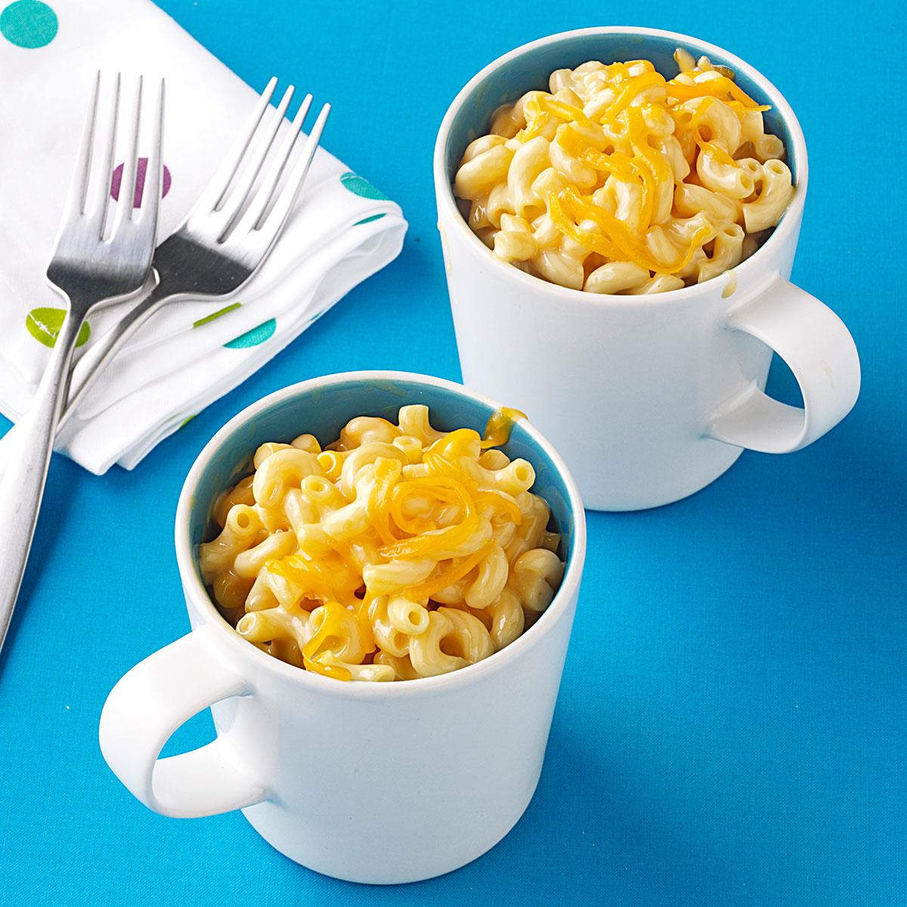

Makeover Macaroni and Cheese
Ingredients:
- 1 package (16 ounces) elbow macaroni
- 2 tablespoons all-purpose flour
- 2 cups fat-free milk
- 1 package (16 ounces) reduced-fat process cheese (Velveeta) cubed
- 1 cup shredded sharp chedder cheese, divided
Recipe:
- Cook macaroni according to package directions. Meanwhile, in a large saucepan, combine flour and milk until smooth. Bring to a boil; cook and stir for 2 minutes or until thickened. Stir in process cheese and 1/2 cup cheddar cheese until smooth. Drain macaroni; stir into cheese sauce.
- Remove from the heat; sprinkle with remaining cheese. Cover and let stand for 5 minutes or until cheese is melted. Yield: 8 servings.